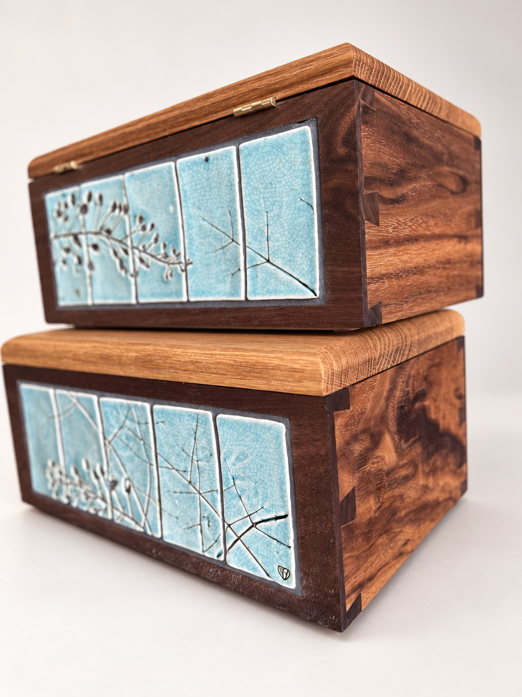

Notes from the workshop / 01
Why choose
custom & handmade?
A custom piece begins with the way you live. A handmade piece is built to stay with you—and, with care, to belong to the people who come after you.

A handmade piece earns its value through decisions: how it fits your room, which boards belong together, how the structure carries weight, and whether it can be cared for years from now. Those decisions are what you are paying for.
Start with the way you live.
A desk can fit your reach as well as your wall. A cabinet can hold the objects you actually own. Custom work makes room for those questions before dimensions become fixed. The result should be useful in ordinary moments, not only beautiful in a photograph.
A board is part of the design.
Color, figure, and grain direction guide how parts are arranged. A maker can carry a pattern across drawer fronts, choose quieter grain for a frame, or let one expressive board become the center of a piece. Learn to read a board’s surfaces and see how different sawing patterns change its character.
Look beneath the surface.
A beautiful finish cannot tell you whether a cabinet will resist racking or a tabletop has room for seasonal movement. Ask how the joints carry loads, how a wide panel is attached, and what can be repaired. Hand-cut joinery is part of GouMang’s practice; its value comes from a suitable design and a careful fit. Explore the work between boards →
Understand the material.
Solid wood, veneer, and different species each offer useful possibilities. “Hardwood” alone does not specify quality, and veneer alone does not imply a shortcut. What matters is how the material is selected and used, and whether its limits are understood. Read about species, veneer, and finish →
The value is in the choices you can understand, the details you can use, and the care a piece can receive.
What the price includes.
Commissioning a piece includes design conversations, sourcing and selecting wood, laying out parts, fitting joints, preparing surfaces, and finishing. A small workshop spreads those hours over very few objects. Ask which materials, construction details, dimensions, finish, and delivery arrangements your quote includes.
Made to stay useful.
Longevity depends on construction, use, and care. Repairable parts, a suitable finish, and clear care advice give a piece a better chance of staying in service. Handmade work can offer a direct relationship with the person who made it, including a conversation about maintenance and repair.
Have a piece in mind? Contact us for a free quote ↗.